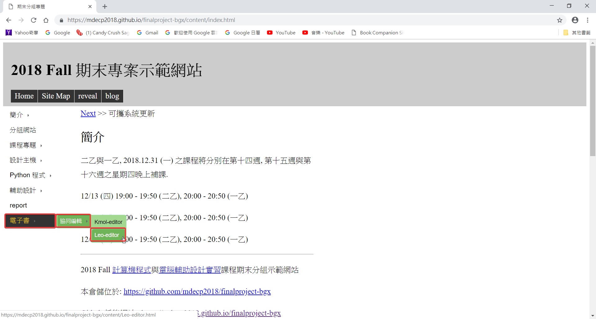
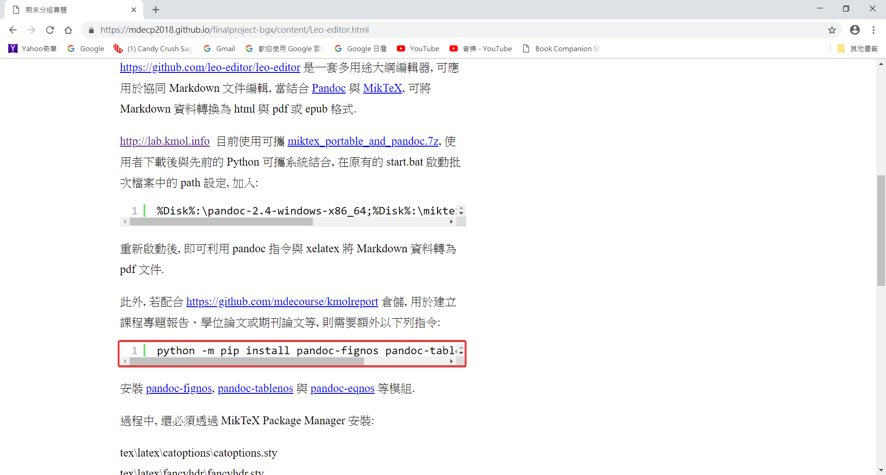

Week14
Onshape：10-1-Lesson Plan
Click " cpbgx " from " mde.tw " to enter the " 2018 Fall final project demonstration website "
從 mde.tw 點選 cpbgx 進入 2018 Fall 期末專案示範網站
e-book > Collaborative Editing > Leo-editor
電子書 > 協同編輯 > Leo-editor

Download " miktex_portable_and_pandoc.7z " unzip and pull to slot " Y "
下載 miktex_portable_and_pandoc.7z 解壓縮並拉到Y槽

Drag " start.bat " to " SciTE "
將 start.bat 拖移到 SciTE
Copy " %Disk%:\pandoc-2.4-windows x86_64;%Disk%:\miktex_portable\texmfs\install\miktex\bin; " to " start.bat "
將%Disk%:\pandoc-2.4-windows x86_64;%Disk%:\miktex_portable\texmfs\install\miktex\bin;複製到start.bat裡面
New path2, and behind the path2 to add " %path2% " ,otherwise invalid
新增 path2，在 path 後面要加上 %path2%;
After restarting,you can use the pandoc command with xelatex to convert Markdown data to a pdf file.
重新啟動後，即可利用 pandoc 指令與 xelatex 將 Markdown 資料轉為 pdf 文件

git clone https://github.com/mdecourse/kmolreport
Copy markdown, pdf, and users to the finalproject-bg3 report
複製 markdown、pdf 和 users 到 finalproject-bg3 的 report 裡
Open " template.leo " in " Leo Editor "
在 Leo Editor 開起 template.leo
You can start editing your own content and convert to pdf when you are done.
開始編輯內容，完成後轉成 pdf
Experience13 << Previous Next >> Teaching Video14